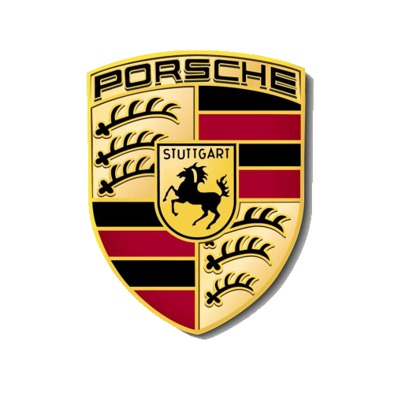
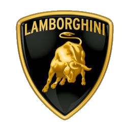
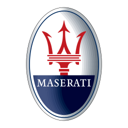
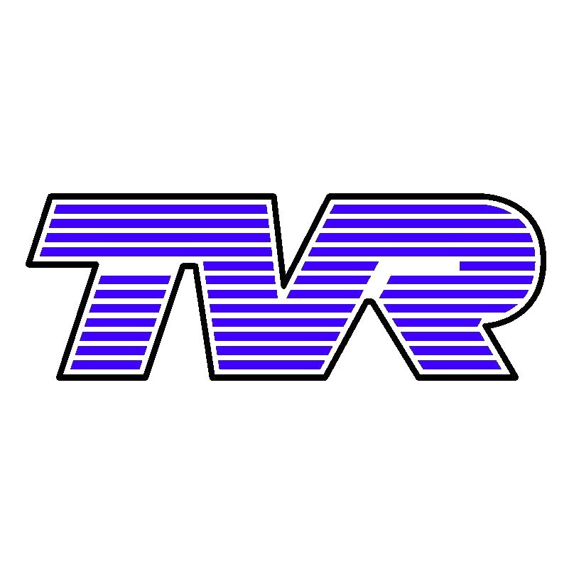
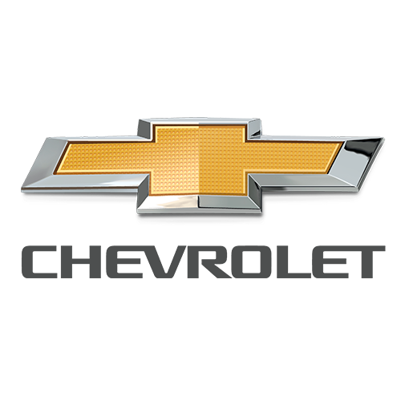
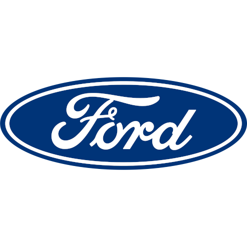
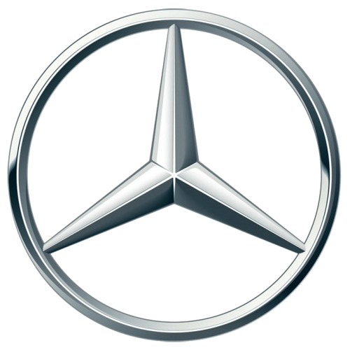
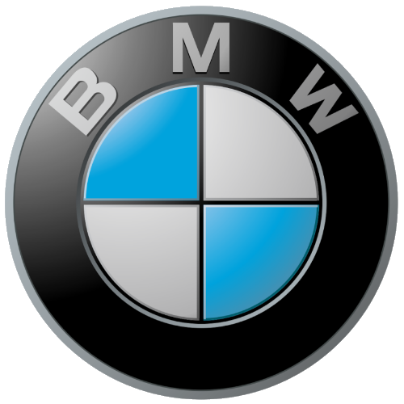

Dr. Ing. h.c. Ferdinand Porsche AG, normalmente abreviado como Porsche, es un fabricante de
automóviles
alemán especializado en automóviles deportivos lujosos, de alta gama, SUV y sedanes. Porsche AG es
propiedad del Grupo Volkswagen, que a su vez es propiedad mayoritaria de Porsche Automóvil Holding
SE. Fue fundada en Stuttgart en 1931 por Ferdinand Porsche y su hijo Ferdinand Anton Ernst Porsche.

Automobili Lamborghini Holding S.p.A., comúnmente conocido como Lamborghini es un
fabricante italiano de automóviles superdeportivos fundado en 1963 por el fabricante de tractores
Ferruccio Lamborghini con sede y oficinas en Bolognese y que actualmente es parte de la matriz de
Volkswagen. Algunos de los nombres de sus automóviles hacen referencia a nombres de toros bravos de
lidia indultados (Murciélago), famosos o históricos (Diablo, Aventador), o simplemente palabras
relacionadas con la tauromaquia (Miura, Espada, Urraco).

Maserati S.p.A. es un fabricante italiano de automóviles deportivos de lujo, propiedad de
Stellantis. En la década de 2010, Maserati se fijó un límite de producción de 75.000 vehículos
anuales en todo el mundo. La marca italiana de automóviles deportivos de alta gama Maserati fue
fundada en Bolonia por Alfieri Maserati en 1914. El emblema de Maserati (posiblemente diseñado por
Mario Maserati) es el tridente, inspirado en la estatua de la Fuente de Neptuno de Bolonia que
adorna la Plaza Mayor de Bolonia.

TVR Manufacturing Limited o simplemente TVR es un fabricante de automóviles deportivos de
Blackpool, Inglaterra, Reino Unido. De producción anual ligeramente superior a Ferrari, tiene la
particularidad de haber sobrevivido no solo como una marca, sino como una empresa independiente.
Hace poco tiempo se anunció el traslado de la fábrica a una república báltica, sin presentar, por
ahora, motivo alguno, aunque dichos planes fueron suspendidos desde que Les Edgar se convierte en el
nuevo propietario y presidente de la compañía.

Chevrolet, también denominada Chevy, es una marca de automóviles y camiones con sede en Detroit,
Estados Unidos perteneciente al grupo General Motors. Nació de la alianza de Louis Chevrolet y
William Crapo Durant el 3 de noviembre de 1911, en los Estados Unidos, fabricando automóviles
robustos. Chevrolet fue fundada el 3 de noviembre de 1911 por iniciativa del piloto de carreras
suizo-francés Louis Chevrolet, en colaboración con el ingeniero francés Ettienne Planche y más tarde
con el empresario William C. Durant, quien estuvo a cargo de la financiación del proyecto.

Ford Motor Company, más conocida como Ford, es una empresa multinacional de origen estadounidense,
especializada en la industria automotriz.
Con su sede central ubicada en Dearborn, Estado de Míchigan, la empresa se expandió a nivel mundial
destacándose principalmente por la producción de automóviles.
Fundada por Henry Ford y se incorporó el 16 de junio de 1903. La compañía vende automóviles y
vehículos comerciales bajo la marca Ford y la mayoría de autos de lujo bajo la marca Lincoln.

Mercedes-Benz es una empresa alemana fabricante de vehículos, filial de la compañía Mercedes-Benz
Group. La marca es reconocida por sus automóviles de lujo, deportivos, autobuses, camiones,
utilitarios, y vehículos todo terreno. Los más cercanos competidores de Mercedes-Benz en el mercado
actual de coches de gama alta son Acura, Alfa Romeo, Audi, Volvo, BMW, Lincoln, Cadillac, Infiniti,
Jaguar, Lexus. La famosa estrella de tres puntas, diseñada por Gottlieb Daimler, simboliza la
capacidad de sus motores para emplearlos en tierra, mar y aire.

BMW (Bayerische Motoren Werke) es un fabricante alemán de
automóviles y motocicletas de alta gama y lujo, cuya sede se encuentra en Múnich. Sus subsidiarias
son Mini, Rolls-Royce, y BMW Bank. BMW es el líder mundial en ventas entre los fabricantes de gama
alta, compite principalmente con Audi, Volvo, Lexus y Mercedes-Benz, entre otros vehículos de gama
alta. El conocido logotipo blanco y azul de BMW se creó en 1917, cuando la empresa aún se dedicaba a
la fabricación de motores de avión y simboliza la bandera del Estado Libre de Baviera.